Setting up a Problem#
This chapter provides a brief overview of how data is structured within the underlying data model.
Data Structure for the Plugin#
In Fig. 3, a simplified illustration of the required data structure for running the plugin is shown. This structure holds all the necessary information to enable dynamic multizone climate and energy simulations in IDA-ICE.
{kind=link}
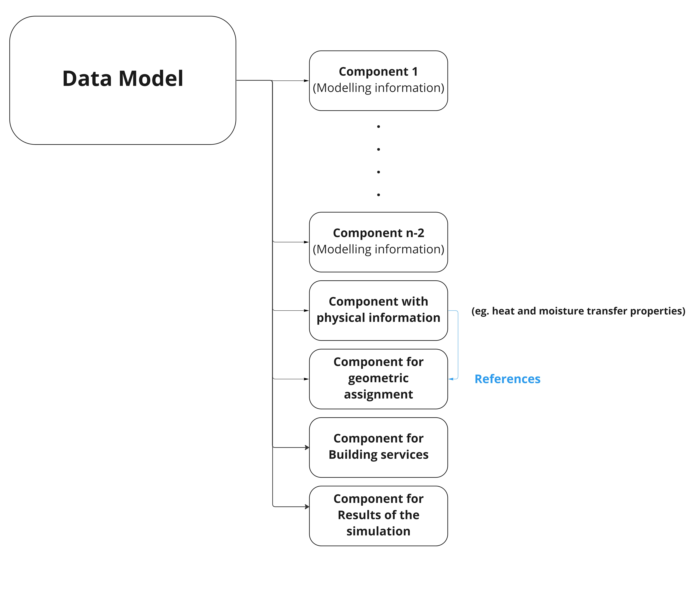
Fig. 3 Simplified representation of the required data structure to run the plugin.#
A more in-depth description of the SIMULTAN data representation for building physics simulations can be found in the chapter SIMULTAN Datastructure to incorporate the IDA-ICE Data model.
Warning
Although it is technically possible to define this structure manually, we strongly recommend using the provided templates to avoid errors. Manual modeling is error-prone and can lead to time-consuming troubleshooting.
The data structure consists of two main elements:
Taxonomies#
Taxonomies are classification systems used to organize elements into hierarchical categories and subcategories. They help structure complex models and define relationships between entities.
Note
Components that are not assigned to a taxonomy are ignored by SIMULTAN.
IDA-ICE Relevant Taxonomies#
The IDA-ICE plugin introduces new taxonomies essential for establishing the connection between IDA-ICE and SIMULTAN. Tools of the plugin’s user interface automatically assign the appropriate taxonomy to each component for compatibility.
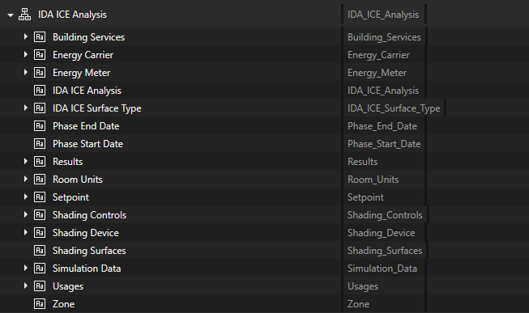
Fig. 4 Overview of IDA-ICE taxonomies#
We recommend starting with one of the provided template files to ensure synchronization and reduce the risk of errors. To restore the complete taxonomy hierarchy required by the plugin, refer to the section on taxonomy update.
Components#
Components represent the functional building blocks of a simulation model. Examples include heat pumps, fans, storage tanks, or control valves. Each component has specific properties and parameters relevant to simulation, such as power consumption or temperature change.
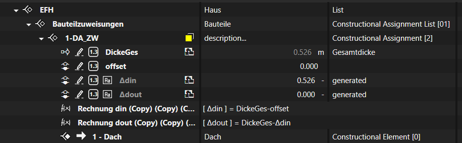
Fig. 5 Components#
Geometrical Modeling#
Geometrical elements are created using the Geometry Editor in SIMULTAN. For detailed guidance, consult the SIMULTAN Editor User Guide or watch our YouTube tutorial.
IDA-ICE Specific Geometry Considerations#
Since geometric modeling is central to SIMULTAN, several aspects are critical to ensure a consistent and stable data structure.
Assigning Components to Geometrical Surfaces#
Each surface—walls, ceilings, and floors—must be explicitly assigned within the model.

Fig. 6 Assigned components#
In Fig. 6, under Components, the selected surface is connected to 6-AW_ZW. Clicking the arrow on the right opens the corresponding component.
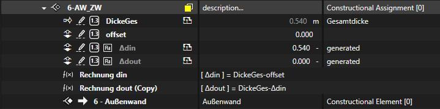
Fig. 7 Data linked to a surface#
Note
At the bottom of Fig. 7, the connection to the IDA-ICE Plugin is indicated | Can be recognized by the assigned taxonomy Constructional Element. More information is available in Opaque Building Components.
Assigning Volume to Rooms#
The process is analogous to surface assignment, but applies to volumes.
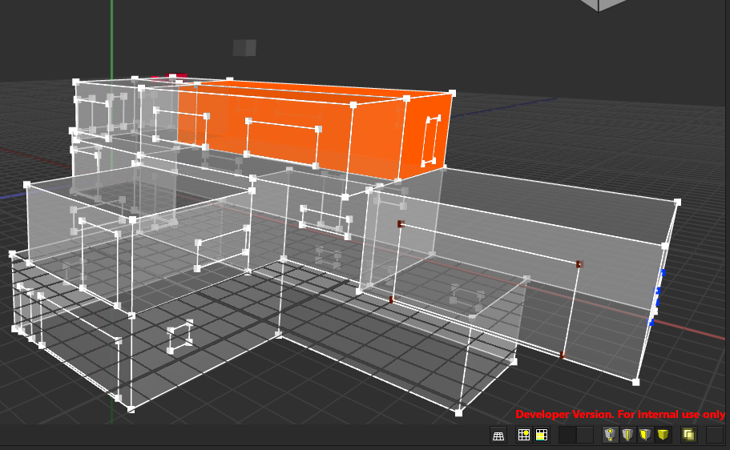
Fig. 8 Connecting rooms with volumes#
Important
The 4th - 7th buttons from the left (yellow-grey cube icons) allow you to select:
Vertices
Edges
Faces
Volumes
Modeling Guidelines#
Important
Start with or import the provided template file template_esbo_and_shades.simultan, which contains all necessary structures for operating the IDA-ICE Plugin.
{kind=link}
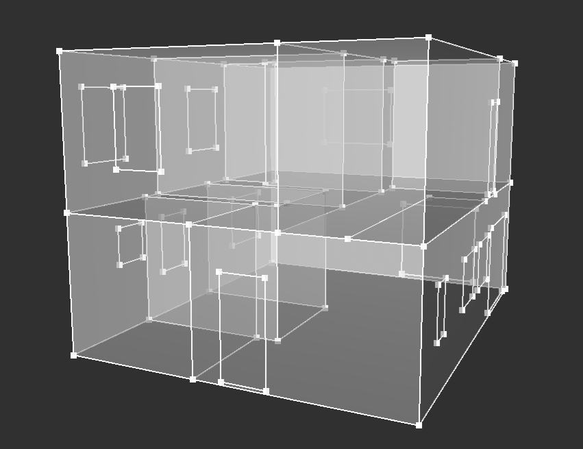
Fig. 9 Geometry of a Tiny House modeled in the SIMULTAN Geometry Editor.#
In Fig. 9, a reference geometry (white) is used for the dynamic simulation. This may be an architectural model or a dedicated model for simulation purposes. This reference geometry is exported to IDA-ICE. Therefore, all geometry-dependent information must be linked to this model.
Note
The geometry file for IDA-ICE must be named idaice_analysis.simgeo.
Setpoints#
Setpoints are defined temperature thresholds used for heating and cooling control. Like rooms, setpoints are assigned to volumes and consist of two parameters: heating and cooling. These define the acceptable temperature range for each room. If the temperature deviates from this range, heating or cooling is triggered.
Warning
Setpoints must always be assigned to a volume!
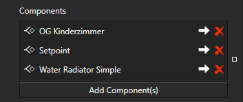
Fig. 10 Setpoints#
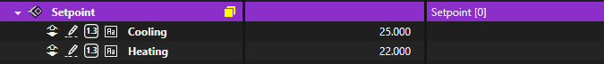
Fig. 11 Heating and cooling parameters#
Propagation Settings#
Propagation controls how values—such as heating and cooling setpoints—are transferred between components and geometry.
You can find the propagation settings under Parameters > Propagation.
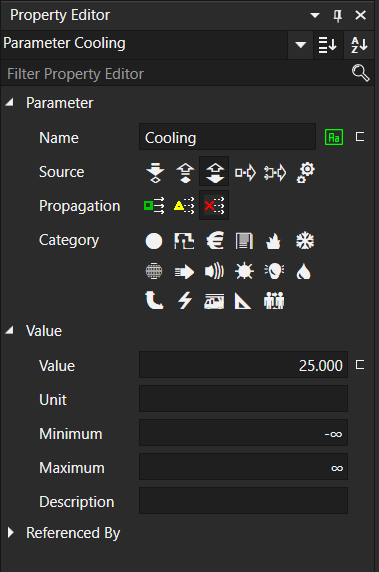
Fig. 12 Propagation buttons#
The three options are:
Always propagate: Prevents changes to setpoints in the geometry view. These values remain fixed.
Never propagate: Allows manual overwriting of heating and cooling setpoints in the geometry view.
Propagate if instance:
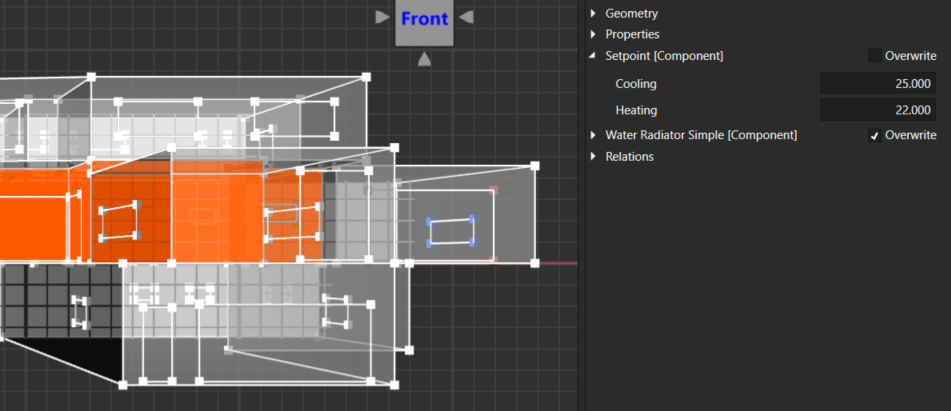
Fig. 13 Never propagate#
Room Unit Exports#
What is a Room Unit in IDA ICE?
A Room Unit in IDA ICE represents a single thermal zone whose indoor climate and energy performance are simulated. It is the core element for modeling room comfort, energy demand, and system operation. All relevant influences and technical systems affecting a room are brought together and calculated within the Room Unit.
Typical Characteristics of a Room Unit:
Geometry and Building Elements:
The Room Unit includes the room dimensions and all surfaces with their physical properties.Usage:
User profiles, occupancy, internal loads (e.g., from equipment or lighting), and schedules are defined here.Building Systems:
Central interface for heating, cooling, ventilation, shading, and control.Controls:
Setpoints such as target temperature, CO₂ limits, or humidity levels are applied to the Room Unit.Energy Flows:
The required energy for heating, cooling, and ventilation as well as internal gains and losses are calculated per Room Unit.Comfort Evaluation:
Comfort indicators like overheating hours, temperature profiles, or air quality are evaluated for each Room Unit.
Ideal Heating and Cooling#
The Ideal Heater and Ideal Cooler are standard room units for simplified simulation of heating and cooling within a thermal zone. They provide or remove exactly the amount of heat needed to maintain the specified room temperature setpoints—regardless of the technical limitations or control losses typically present in real systems.
Tip
Temperature setpoints: Define when heating or cooling is activated.
Simultan Relevant Knowledge#
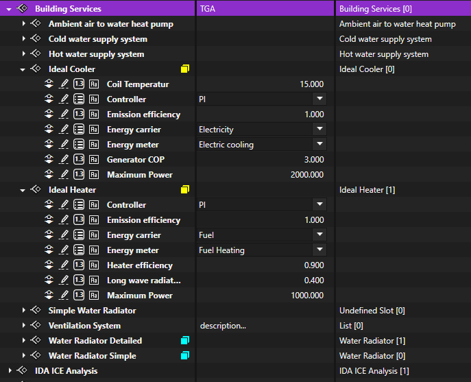
Fig. 14 Parameters of ideal heating and cooling#
You can find the Ideal Cooler and Heater in SIMULTAN under Building Services. Both components are equipped with many parameters for perfect results.
In Fig. 14 you will see a yellow icon next to the names of the Ideal Cooler and Heater, which indicates that this component is connected to a geometry. Connecting the component to a volume is essential for exporting to IDA-ICE.
Water Radiator#
After using the Ideal Heater/Cooler for simplified, direct room temperature control, the Water Radiator adds realism by simulating an actual hydronic radiator with water flow, heat transfer limits, and response delays. Unlike the Ideal Heater, the Water Radiator reflects physical system constraints and integrates with real heating circuits, making it essential for detailed, system-based simulations.
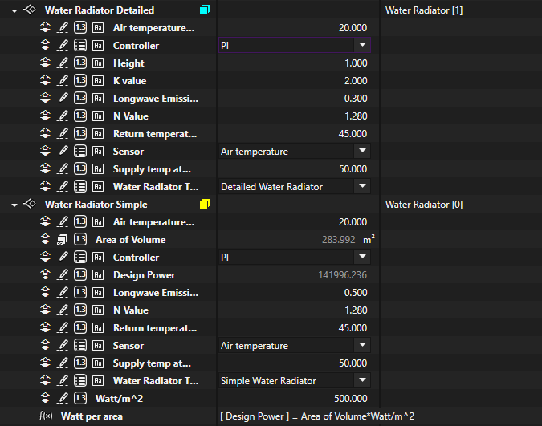
Fig. 15 Water Radiator#
The water radiator behaves in the same way as an ideal heater/cooler. Therefore, it must be assigned to a volume/zone! You find it under Building Services.
Simulation Data#
The simulation data is divided into two main phases:
Warm-up Phase
Simulation Phase
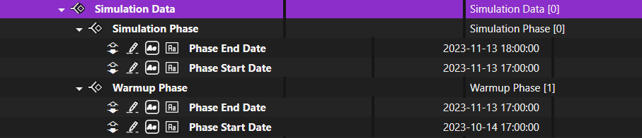
Fig. 16 Simulation Data#
Warm-up Phase#
The warm-up phase is an initialization period at the beginning of the simulation. During this time, the building model adjusts its internal conditions – such as wall temperatures, indoor climate, and thermal mass – to reach a realistic thermal balance. The results from this phase are not included in the output statistics. Its sole purpose is to ensure that the main simulation (Simulation Phase) starts from physically meaningful and stable conditions.
Simulation Phase#
The simulation phase is the main calculation period during which all desired results of the building model are collected. This phase covers the predefined analysis period (e.g., one year) and computes operating states, room temperatures, energy consumption, and other relevant indicators. Only values determined during the simulation phase are used for analysis, statistics, and reporting. Thus, this phase provides the essential basis for evaluating the building and its systems.
Final Steps#
The plugin setup is now complete. You can proceed with exporting and executing simulations in IDA-ICE. Make sure all geometry and component assignments are consistent and that taxonomies are up to date.
Note
Refer to the respective documentation chapters for detailed guidance on:
Building Envelope
Transparent and Shading Elements
HVAC Configuration via ESBO
Internal Gains
Material Properties
This concludes the setup instructions for using the SIMULTAN plugin for IDA-ICE.